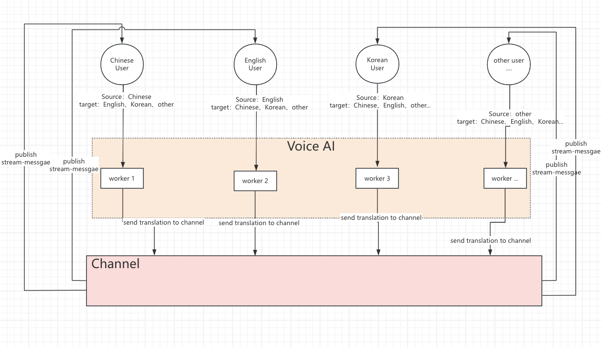

Figure 1: Agora Real-time Translation System Flow Diagram
This document describes how to implement real-time voice translation functionality based on the Agora SDK. This feature allows users speaking different languages to communicate without barriers, as the system automatically detects the user's language and translates voice content into the target language displayed as subtitles.
Figure 1: Agora Real-time Translation System Flow Diagram
Figure 2: Agora Real-time Translation audio Flow Diagram
The system consists of the following main components:
User Client → Demo Server: Request token (with uid) Demo Server → User Client: Return token
When the application starts, the client needs to request tokens for RTC and RTM connections from the server.
User Client → RTC: Login to RTC using token, enable stream message monitoring User Client → RTM: Login to RTM using token
Use the tokens obtained from the server to log in to both RTC and RTM services.
RTC → User Client: Get remote users' source languages, deduplicate and set as local target languages User Client → RTC: Call Join API (configure local language settings and enable STT service) RTC → Agent: Call Join API (forward language settings) Agent → User Client: Start worker process to subscribe to application audio streams and enable translation RTC → User Client: Startup successful User Client → RTM: Synchronize local language settings to RTM user status
At this stage, the system detects user languages, configures speech recognition and translation services, and synchronizes language settings.
RTC → User Client: Remote user join/status change notification RTC → User Client: Get remote users' source languages, deduplicate and set as local target languages User Client → RTC: Call Update API (update target language settings) RTC → Agent: Call Update API (update language configuration) Agent → User Client: Update worker process language settings from previous agent startup process RTC → User Client: Update successful
When new users join or existing users' status changes, the system re-detects languages and updates translation configurations.
User Client → RTC: Listen for stream messages RTC → Agent: Push translation results to channel-wide stream messages Agent → User Client: Receive stream messages and display subtitles
This is the actual translation workflow where users' speech is recognized, translated, and then displayed as subtitles to other users.

Figure 3: Subscription Relationship Between Components
The diagram above illustrates the subscription relationship between different components in the Agora real-time translation system:
This subscription model ensures that each component receives only the data it needs to process, optimizing bandwidth usage and system performance. The Agent acts as a central translation hub, while keeping the communication paths between users direct and efficient.
For detailed information about the RESTful APIs used in the real-time translation system, please refer to our comprehensive Voice to Text RESTful API Documentation. The documentation covers:
We recommend assigning a dedicated worker for each end user to better recognize and translate conversations. Each worker should only recognize one language. You can configure this using the following field:
"uidLanguagesConfig": [ // Optional: Configure specific languages for individual users
{
"uid": "<YouSpecifyUid>", // User ID to configure language for
"languages": ["<YourTranscribeLanguages>"] // Languages to use for this specific user
}
]
Here's a complete example of an actual request:
{
"name": "**",
"languages": ["en-US"],
"maxIdleTime": 30,
"rtcConfig": {
"channelName": "22",
"subBotUid": "*",
"pubBotUid": "****",
"subscribeAudioUids": ["144757"],
"subBotToken": "*****",
"pubBotToken": "*****"
},
"uidLanguagesConfig": [
{
"uid": "*",
"languages": ["en-US"]
}
],
"translateConfig": {
"languages": [
{
"source": "en-US",
"target": ["zh-CN"]
}
]
}
}
In this example, we've configured a dedicated worker to recognize English (en-US) for a specific user, and translate it to Chinese (zh-CN).
By following the guidelines in this document, you can successfully integrate Agora's real-time voice translation functionality into your application, providing users with barrier-free communication experience across different languages.